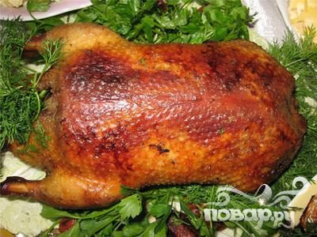

Roasted Duck on the Bed of Salt

Description
Duck is a tasty special occasion turkey alternative, but preparing one can be intimidating. It's a fatty bird therefore the amount of rendered fat that also has a tendency to burn can scare any aspiring cook off.
This recipe is simple, minimalistic, clean, and produces an amazingly juicy and flavorful centerpiece with the crispiest skin. It's important that the bird is well patted dry for the salt to stay in the pan.
Ingredients
- 1 whole duck washed and carefully patted dry
- 2 lbs of coarse table or rock salt
- Black pepper to taste
Steps
- Preheat oven to 400F
- Prepare your baking tray by lining it with tinfoil and pouring salt over it
- (Optionally) Rub the washed and dried duck with black pepper
- Carefully lower the bird on the bed of salt breast side down
- Roast for 40 minutes
- Carefully turn the bird over and roast for another 40 minutes
- Once done remove the duck from the backing tray, shake off excess salt and serve